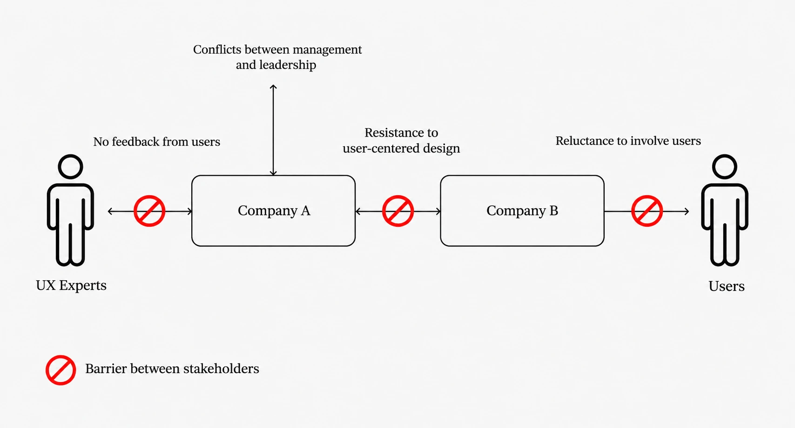
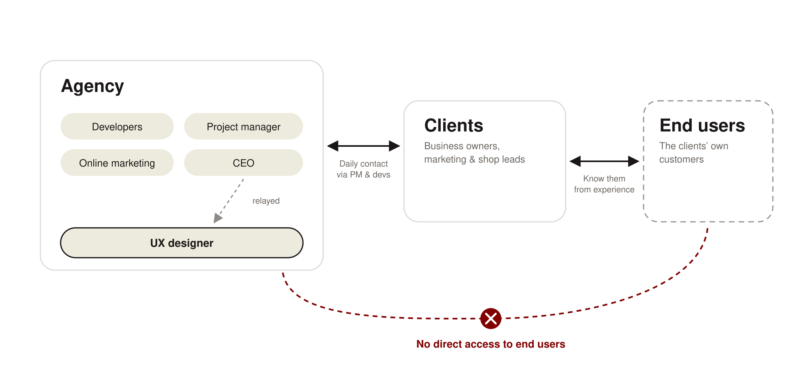
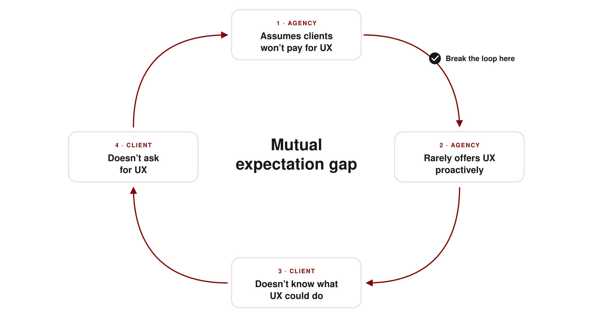
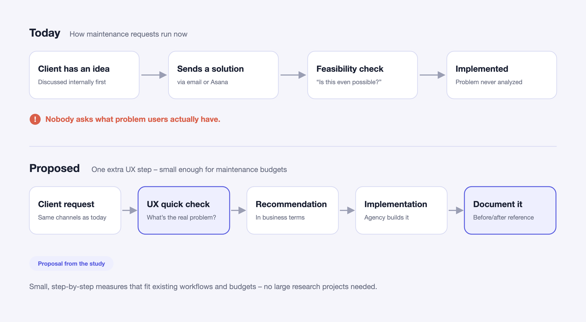
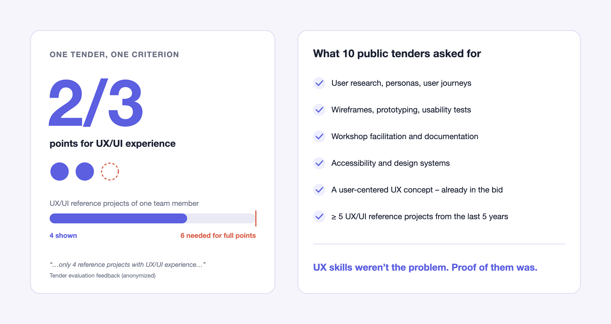
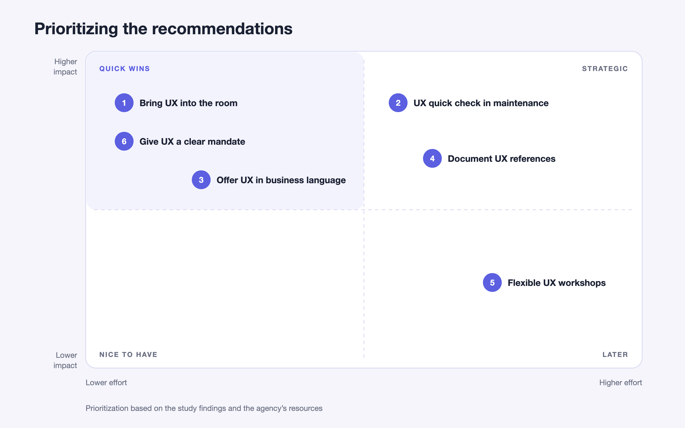
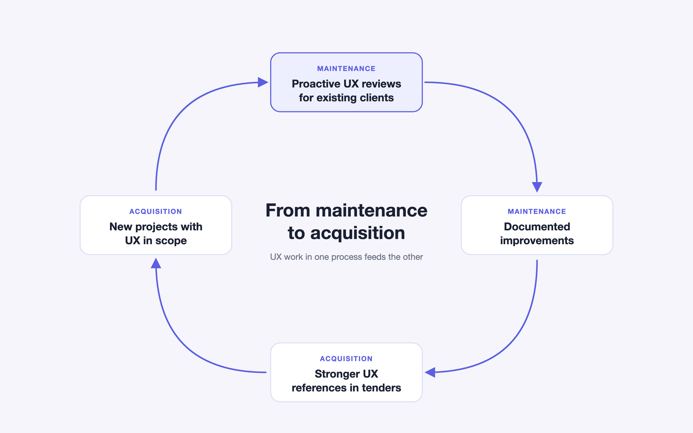

How a 9-person B2B agency can bring human-centered design into client acquisition and website maintenance – a qualitative case study based on 14 stakeholder interviews and 10 public tenders.


01 · The problem
UX at econcess happened mainly at project kickoff. Maintenance and acquisition – the agency's day-to-day business – ran almost entirely on technical requests.
02 · The insight
Both sides were waiting for each other. The agency assumed clients wouldn't pay for UX, so it didn't offer it. Clients didn't know what UX could do for them, so they didn't ask.
03 · The result
A prioritized set of small, low-cost recommendations that turn UX from a kickoff activity into an ongoing service – and help the agency build the UX references it was losing tender points for.
01 · Overview
The challenge
econcess GmbH is a full-service digital agency near Munich with nine employees. It builds and maintains websites and online shops for B2B clients. Two processes keep the business running: maintaining existing client websites and winning new projects, often through public tenders.
The agency has UX skills in-house. But in both processes, the conversation was mostly technical: a client sends a request, the agency checks whether it's feasible, and builds it.
Research question
How can human-centered design be integrated into the client acquisition and maintenance processes of a small digital agency?


In B2B, the agency talks to its clients – not to the people who actually use the websites.
02 · Research
Understanding both sides
To see the full picture, I looked at the agency from three angles: from the inside, from the client side, and from the market.
6
Employee interviews
Developers, project manager, online marketing, UX and the CEO. How does UX actually happen day to day?
8
Client interviews
Existing clients of the agency. What do they expect, and how do they think about UX?
10
Tender documents
Public tenders the agency bid on. What does the market explicitly ask for?
03 · Analysis
From 14 interviews to 8 themes
All interviews were transcribed and analyzed with structured qualitative content analysis (Kuckartz & Rädiker) in MAXQDA. I started with categories based on the research question and theory, then refined them as new themes came up.
The key step was putting employee and client statements side by side for every theme. That's where the most important finding came from.
01
Strategic role of HCD
No UX budget or strategy; UX is filed under visual design.
02 · emerged in analysis
Mutual expectation gap
The agency assumes no demand; clients don’t know UX is on offer.
03
Culture & mindset
Both sides define good UX as clear structure and finding things fast.
04
Roles & collaboration
Design is involved only when a task is labeled “design”.
05
HCD in processes
UX happens at kickoff, rarely during maintenance.
06
Resources & methods
Figma and Adobe, but no research or testing tools. Little use of data.
07
Access to end users
User needs reach the agency only indirectly, through clients.
08
Benefits & improvements
Clients link UX to sales, leads and fewer drop-offs.
Where the agency stands
To understand where the company stands today, I also used three UX maturity models – Nielsen Norman Group, Chapman & Plewes and the UXQB HCD maturity model. They served as orientation and helped shape the analysis categories.
Across all three, econcess sits at roughly stage 2: UX skills and awareness exist, but there is no strategy, budget or defined process behind them.
04 · Insights · 1
The mutual expectation gap
The most important finding wasn't in my interview guide – it only became visible during analysis.
Employees read the low demand for UX as low interest, so they rarely offered it. Clients, meanwhile, said they couldn't judge which UX improvements made sense – and wanted the agency to tell them.
“I'm afraid it's too expensive for them and that they'll think we just want to take their money.”
— CEO
“What I'm missing is active input: concrete suggestions, assessments and recommendations.”
— Client 1
“If there are ideas for how things could work better, we're happy to hear them. We just don't have the know-how ourselves.”
— Client 7
Low demand didn't mean low interest. It meant nobody was starting the conversation.


Insight 2
UX happens at kickoff, then disappears
In new projects, design is involved early. But in maintenance – most of the daily work – clients send a ready-made solution via email or Asana, and the agency checks whether it's technically possible. Nobody asks what problem users actually have.
“We do UX design at the beginning, but not during the ongoing process.”
— Employee, UX
“My main question is: is it even possible, and can it be done without problems?”
— Client 8


Insight 3
A game of broken telephone
Clients are very happy with the agency: fast replies, reliable contacts, clear communication. But the designer rarely talks to clients directly. Design input travels through developers or the project manager – and gets lost on the way.
“The person who takes care of design has no contact with these clients. […] It's a bit like broken telephone.”
— Developer
“I'd rate the collaboration at about 60 percent. It's not bad, but there's no truly integrated process.”
— Employee, UX
Insight 4
No direct line to end users
The agency only knows end users through its clients. And clients know them from experience, orders and conversations – not from research.
“Our clients believe they know who their customers are and what they want. I don't think they can know that without professional help.”
— CEO
“I don't think econcess knows them well enough. But it doesn't have to. It's enough if econcess asks me.”
— Client 5
In B2B, the client is the first and cheapest research channel. Start there.
Insight 5
The market already asks for UX
The tenders explicitly required UX: user research, usability tests, workshops, accessibility, wireframes – and sometimes a full user-centered concept as part of the bid.
In one tender, econcess scored 2 out of 3 points on a key criterion. The reason: one team member could only show 4 UX/UI reference projects. Full points required 6.
UX skills weren't the problem. Proof of them was.


05 · Recommendations
Start small, fit the workflow
A small agency has small budgets and no research team. So the recommendations don't start with big studies – they add small UX steps to processes that already exist.


01
Bring UX into the room
Include design in interdisciplinary meetings with development and project management, and in client calls for design-related requests. The CEO had already suggested this in the interviews.
02
Add a UX quick check to maintenance
Before implementing a client's solution, take a short look at the underlying problem and how it affects users. Turn the result into a concrete recommendation – exactly what clients said they were missing.
03
Offer UX in business language
Clients think in revenue, leads and conversions. Frame UX around their problems (“customers can't find products”) instead of abstract design quality.
04
Document every UX improvement as a reference
Short before/after summaries that can go straight into tender bids.
05
Keep workshops flexible
Some clients wanted regular UX sessions, others only when there's a concrete need. Offer project-based formats instead of a fixed program.
06
Give UX a clear mandate
Define when design has to be involved – so it doesn't depend on whether a ticket happens to be labeled “design”.


Proactive UX work in maintenance creates the references the agency needs to win new projects.
06 · Outcome
Next steps
The study was handed over to the agency as a basis for the next steps:
01 Pilot the UX quick check with 1–2 maintenance clients
02 Document the first improvement as a before/after reference
03 Use that reference in the next public tender
07 · Lessons learned
What I'm taking with me
Ask both sides the same question.
The expectation gap only became visible when I compared employee and client answers. Either side alone would have told a misleading story.
“No demand” is a hypothesis, not a fact.
What looked like low interest was really a communication problem. I'll question that kind of assumption much earlier in future projects.
In B2B, research starts with the client.
When you can't reach end users directly, clients are a valuable – if imperfect – proxy. The goal is to move step by step closer to real users.
Limitations
This is a single case study with 10 tender documents, so the results can't be generalized. Next time, I'd validate the recommendations with a small pilot before writing them up.
with the people behind the product?